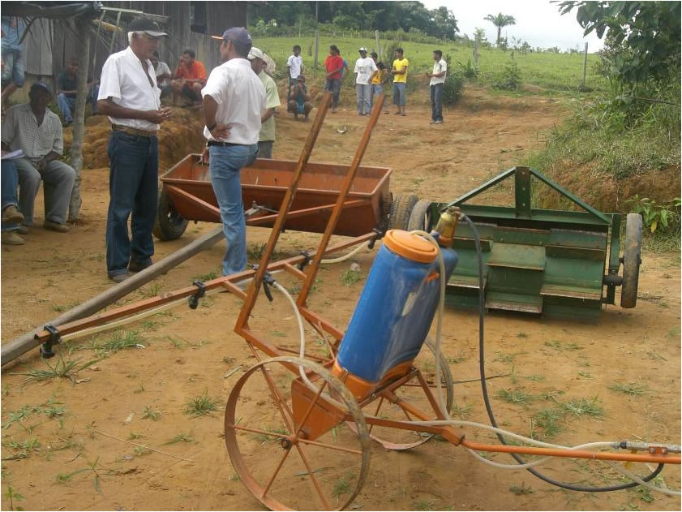
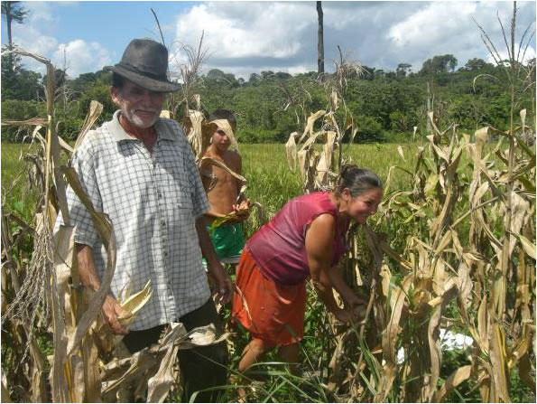

|
FloAgri.
New opportunities for small farmers of the Amazon to strengthen hazards resilience while preserving their forest.
|
| Our model aims at assessing economic performances and environmental impacts of family breeders and testing the influences of PFAC and forest management as additional activities. The principle of this analysis is to compare various production activities starting from the same initial conditions. Considering that the small-scaled farmers in the Amazon are mainly focused on livestock, each agent adopts a breeder strategy and a set of specific activities. Then each one begins with a fixed size farm, containing the same land cover and the same soil quality. His labor force is also strictly identical. |  |
 |
Our study does not compare solely the financial profits of the agricultural activities implemented in the project. But it seeks to better understand and assess the feasibility of each new activity in terms of family labor management, availability of land and economic profitability. Our first findings conclude that a strict compliance with the law (do not deforest 80% of property) is not economically sustainable if the agents apply their standard strategy. By just looking at the static economic returns, the new activities do not provide obvious economic advantages compared to traditional breeding. But the simulations show that when one takes into account the hazard (like desease probability), these extra activities can be profitable by allowing the agents to overcome their difficulties while preserving their forest. Thus, the Floagri experiments combined with simulation analysis reveal that new agricultural practices can increase the small farmers capacities such that resilience against hazards. In the same time, by preserving their forest, they contribute to the sustainable development of the Amazon region. |
For more information, contact the author.
Paper on Cirad web site (in french) : Quand l’agriculture familiale préserve la forêt amazonienne
Presentation of Floagri project on the Green research unit.